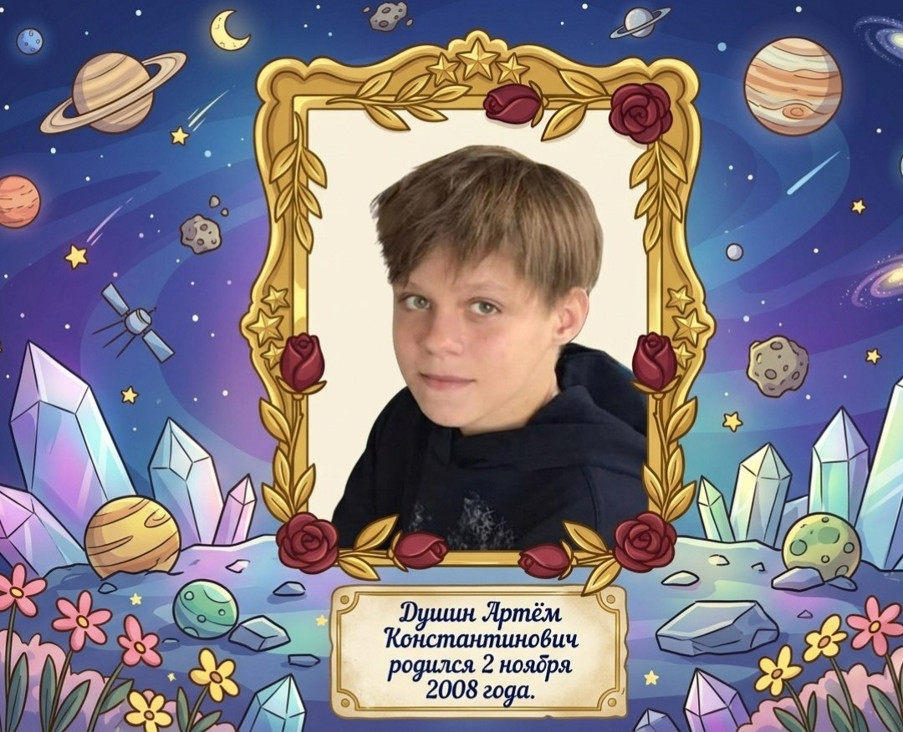

Средний сын

Родился: 2 ноября 2008 года
Средний из братьев. Создатель проекта по сохранению истории рода Душиных, Тарасюков, Карповичей, Бандыков и Чаплыгиных.
Носитель фамилии Душин. В нем соединились все пять ветвей семейного древа: от таинственных Чаплыгиных до трудолюбивых Бандыков.